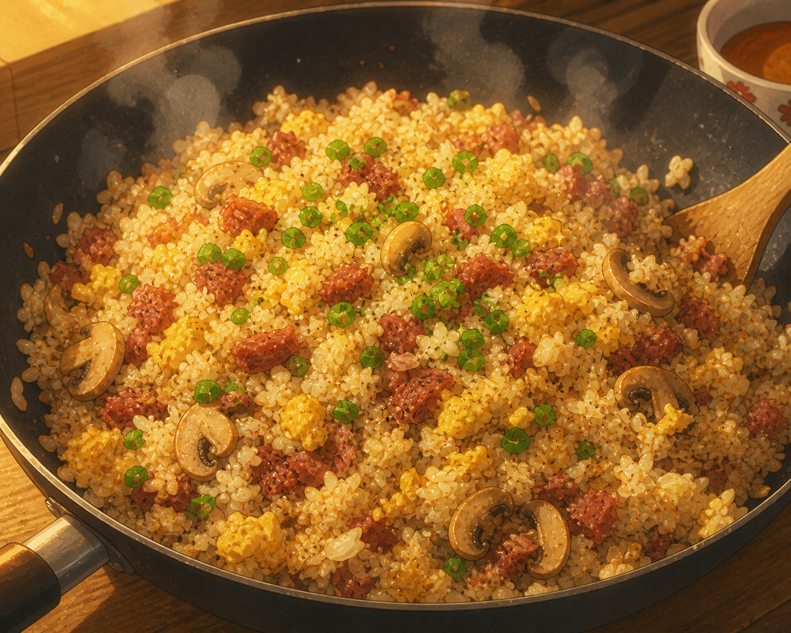

Home
Gin's Fried Rice (One Piece)

Description
Gin's Fried Rice is a hearty pirate meal from the Straw Hat Crew's chef Sanji, made for the hungry swordsman Gin. This quick stir-fry combines smoky corned beef, fluffy scrambled eggs, and day-old rice with simple seasonings for smoky, savory comfort food perfect for adventurers.
Ingredient
- 360g cooked rice (day-old is best)
- 50g corned beef, diced
- 2 eggs, beated
- 1/2 onion, chopped
- 4-5 mushrooms, sliced
- 1/2 tsp soy sauce
- Salt and pepper to taste
- Green onion for garnish
- Vegetable oil for frying
Steps
- Heat oil in wok, stir-fry onion and mushrooms until soft (2-3 minutes)
- Add corned beef, cook until warmed and slightly crispy.
- Push ingredients aside, scramble eggs in empy space until just set
- Serve in molded bowls, garnish with green onions.